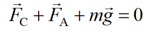
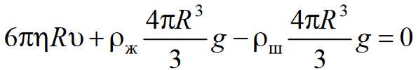
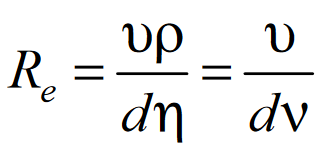

Явления переноса: диффузия, внутреннее трение и теплопроводность.
В изолированной термодинамической системе равновесное состояние характеризуется однородным распределением физических величин. Система с неоднородным распределением этих параметров будет стремиться к равновесию (т. е. к состоянию, в котором градиенты этих величин равны нулю). Переход в равновесное состояние всегда сопровождается возникновением потока физической величины, которая является неодинаковой в разных частях системы. Процессы, в которых осуществляется перенос той или иной физической величины из одной области тер модинамической системы в другую, называют явлениями переноса. Так как в неравновесном состоянии градиенты этих величин не равны нулю, в отличие от равновесного, то можно предположить,что скорость переноса должна быть связана с градиентами этих величин. Опыт подтверждает это положение, которое позволяет описать явления диффузии (выравнивание концентрации молекул (плотности) вещества за счет переноса массы в объеме), теплопроводности (выравнивание температуры по объему в результате переноса тепловой энергии хаотического движения частиц системы) и внутреннего трения (выравнивание скоростей движения различных слоев текучей среды в связи с переносом импульса часиц). Законы переноса массы, энергии и импульса положены в основу теории неравновесных процессов, или физической кинетики. Рассмотрим системы, в которых неоднородное распределение параметров наблюдается только вдоль одной оси (одномерная неоднородность).
Явление диффузии для химически однородного вещества подчиняется закону Фика:

где dm – масса вещества, переносимая при диффузии через площадку dS; D − коэффициент диффузии ([D] = 1 м 2 /с); dρ/dy− градиент плотности, равный скорости изменения плотности на единицу длины в направлении оси Оy, перпендикулярной к площадке dS. Знак «минус» показывает, что перенос массы происходит в направлении убывания плотности.
Сила внутреннего трения F между двумя слоями газа или жидкости подчиняется закону Ньютона:

где η − коэффициент динамической вязкости ([η] = 1 Па·с); du/dy - градиент скорости упорядоченного движения, показывающий быстроту изменения скорости жидкости или газа в направлении оси Оу, перпендикулярной к направлению движения слоев; S − площадь поверхности, на которую действует сила F.
Согласно 2-му закону Ньютона, силу взаимодействия двух слоев можно рассматривать как процесс передачи импульса от одного слоя к другому в единицу времени (Fdt = dp). С учетом этого получаем

где dр – импульс, передаваемый за время dt от слоя к слою через поверхность площадью dS.
Явление теплопроводности подчиняется закону Фурье:

где æ − коэффициентом теплопроводности ([æ] = 1 Вт/(м·К)); dT/dy − градиент температуры, равный скорости изменения температуры на единицу длины в направлении оси Оy, перпендикулярной к площадке dS. Знак «минус» показывает, что при теплопроводности энергия переносится в направлении убывания температуры.
Внутреннее трение (вязкость).
Рассмотрим газ, у которого слои движутся с различными скоростями. Каждая молекула газа участвует в двух движениях: хаотическом тепловом движении со средней скоростью 〈υ〉 и упорядоченном движении со скоростью u (причем u << 〈υ〉). Два соприкасающихся слоя газа имеют разную скорость упорядоченного движения u (см. рис). В этом случае при переходе молекул из одного слоя в другой они будут переносить различные значения импульса, соответствующего упорядоченному движению слоев газа. Попав в другой слой, молекула претерпевает соударения с молекулами этого слоя. В результате соударений она либо отдает избыток своего импульса другим молекулам, либо увеличивает свой импульс за счет других молекул. В итоге импульс более быстро движущегося слоя уменьшается, а более медленно движущегося − увеличивается. Таким образом, слои ведут себя так, как если бы к первому слою ( скорость которого больше) была приложена тормозящая его движение сила, а ко второму слою (скорость которого меньше) − такая же по величине ускоряющая его движение сила.

Экспериментально установлено, что для многих жидкостей и газов сила вязкого трения подчиняется закону Ньютона. Она характеризует взаимодействие соседних слоев и направлена по касательной к ним.
Коэффициент динамической вязкости η в законе Ньютона равен силе трения, приходящейся на единицу площади слоя при единичном градиенте скорости. Согласно молекулярно кинетической теории, коэффициент динамической вязкости идеального газа равен

где υ – средняя арифметическая скорость теплового движения молекул; λ – средняя длина свободного пробега молекул газа; ρ – плотность газа. Эти величины в свою очередь определяются соотношениями

где R – универсальная газовая постоянная; Т – абсолютная температура; М – молярная масса; d – эффективный диаметр молекулы; n – концентрация молекул; m0 – масса одной молекулы; NA – число Авогадро.
В жидкостях и газах механизмы внутреннего трения различны. В газах расстояние между молекулами значительно превышает их размеры, что позволяет им свободно переходить из одного слоя в другой. Поэтому причиной внутреннего трения является перенос импульса. В жидкости межмолекулярные расстояния сравнимы с размерами самих молекул, и, соответственно, молекулы жидкости большую часть времени находятся около положений равновесия. Поэтому движущаяся масса жидкости увлекает соседние слои в основном за счет сил притяжения между молекулами.
Коэффициент динамической вязкости жидкости во много раз превышает коэффициент вязкости газов и изменяется в широких пределах в зависимости от рода жидкости и ее температуры. С ростом температуры вязкость жидкостей уменьшается, в то время как вязкость газов растет. Уменьшение вязкости жидкости с рос том температуры обусловлено увеличением среднего расстояния между молекулами и ослаблением сил межмолекулярного взаимодействия. Увеличение вязкости газов с ростом температуры связано с возрастанием скорости теплового движения и средней длины свободного пробега молекул.
Описание установки и метода измерений
Внутреннее трение приводит к возникновению сил сопротивления, действующих на твердые тела, движущиеся в жидкости или газе. В частности, сила сопротивления жидкости при ламинарном обтекании, действующая на сферическое тело, движущееся в неограниченном объеме, определяется формулой Стокса:

где R – радиус сферического тела; υ – скорость его движения.
Из соотношения Стокса можно определить коэффициент динамической вязкости η, измерив силу сопротивления Fc, действующую на движущийся в жидкости шарик, и скорость υ его движения. Опущенный в сосуд шарик, если его плотность больше плотности жидкости, падает на дно. На него действуют три силы: сила тяжести mgG, сила Стокса Fc и выталкивающая сила Архимеда Fa . Сила Fa определяется законом Архимеда:

где ρж – плотность жидкости; g – ускорение свободного падения; V – объем шарика.

В начале движения преобладает сила тяжести и движение будет ускоренным. С возрастанием скорости, согласно закону Стокса, сила сопротивления увеличивается, а ускорение соответственно уменьшается, пока движение шарика не станет равномерным. При равномерном прямолинейном движении сумма всех сил, действующих на шарик, равна нулю:
Выберем ось Oу, как показано на рисунке выше, и спроецируем векторное уравнение на эту ось:

Объем шарика и его массу можно определить соответственно по формулам:

где ρш – плотность материала шарика.
С учетом соотношений массы, объема и законов Стокса с Архимедом получим:
Отсюда приходим к расчетной формуле для коэффициента динамической вязкости жидкости:

где d = 2R – диаметр шарика; υ – скорость равномерного движения шарика; l – расстояние между метками, пройденное шариком за время t.
Если учесть, что шарик движется не в безграничной среде, а цилиндрическом сосуде с радиусом R∗, то формула динамической вязкостm примет вид

Течение жидкости можно рассматривать как скольжение слоев относительно друг друга без перемешивания. Такой режим течения называется ламинарным. С увеличением скоростей движения возникает интенсивное перемешивание газа и образуются завихрения. Такое движение называется турбулентным. Рейнольдс установил, что переход от ламинарного режима к турбулентному происходит при определенном значении безразмерной величины (числа Рейнольдса):
Где υ – средняя (по сечению трубы) скорость потока; ρ – плотность газа (или жидкости); d – характерный для поперечного сечения размер; ν = η / υ – коэффициент кинематической вязкости. Он характеризует быстроту выравнивания скорости упорядоченного движения различных слоев среды.